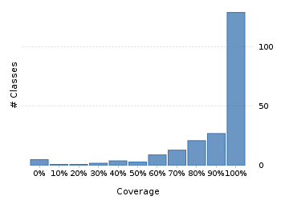

Project overview
Evaluation License
This report was generated with an evaluation server license. Purchase Clover or configure your license.
Code coverage 242 classes, 19,513 / 22,421 elements
0.870300287%
Test results 0 / 0 tests 0 secs
No test results
No test results could be found. Please ensure that you have instrumented your unit tests correctly.
Code metrics
5,166
13,344
3,911
242
166
7
70,869
28,810
7,264
0.54
3.41
16.16
34.57
1.86
Class Coverage Distribution

Class Complexity
Coverage tree map
Generating Coverage Tree Map. Please wait...

Top 20 project risks
DateTimeFormatterBuilder.MatchingParser
PeriodFormatterBuilder.IgnorableAffix
DateTimeFieldType.StandardDateTimeFieldType
StringConverter
ConverterSet
Partial
PeriodType
CachedDateTimeZone.Info
BaseSingleFieldPeriod
DateTimeFormatterBuilder.NumberFormatter
ZoneInfoCompiler.RuleSet
PeriodFormatterBuilder.SimpleAffix
DurationFieldType.StandardDurationFieldType
PeriodFormatterBuilder.FieldFormatter
ZoneInfoCompiler.DateTimeOfYear
ISODateTimeFormat
BasePeriod
PeriodFormatterBuilder.Separator
PeriodFormatterBuilder
DateTimeFormatterBuilder.Composite
Most complex packages
| 1. | 0.961150396.1% |
org.joda.time 2505 |
| 2. | 0.8228169782.3% |
org.joda.time.format 1625 |
| 3. | 0.7823403578.2% |
org.joda.time.chrono 1290 |
| 4. | 0.7814938478.1% |
org.joda.time.field 670 |
| 5. | 0.820741482.1% |
org.joda.time.tz 588 |
Most complex classes
| 1. | 0.946257294.6% |
LocalDateTime 179 |
| 2. | 0.936082593.6% |
LocalDate 160 |
| 3. | 0.9001919690% |
DateTimeZone 150 |
| 4. | 0.97697.6% |
DateTime 143 |
| 5. | 0.9048672390.5% |
PeriodFormatterBuilder.FieldFormatter 142 |